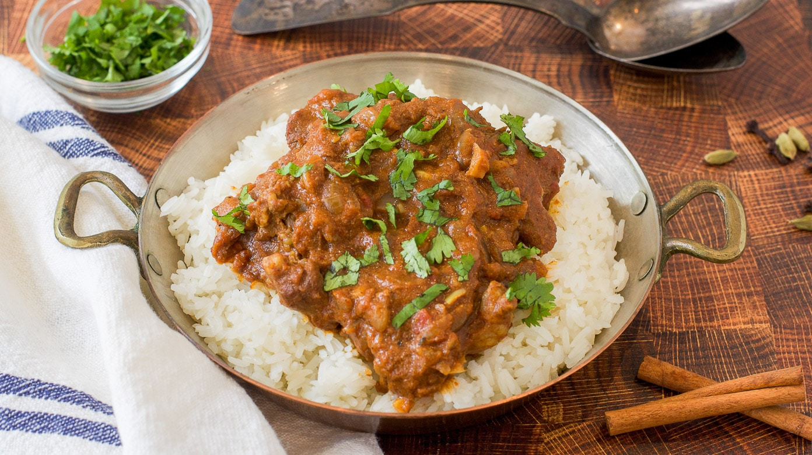

Lamb Rogan Josh

The heavenly blend of spices in this rich, aromatic curry combined with meltingly tender lamb pieces is just the ticket for a cold winter’s night.
Ingredients
- Spices
- Tomato paste
- 750 g lamb leg, fat trimmed, cut into 2.5cm cubes
- 1 large onion, chopped
- 2 cloves garlic, crushed
- 1 x 5cm piece of ginger, peeled and grated
- 100 ml natural yoghurt
Directions
- Combine spices and tomato paste with a pinch of salt. Set aside.
- Heat oil in a large pan and brown the lamb in batches. Set aside.
- In the same pan, fry the bay, cinnamon, cloves and onion until the onion is soft and translucent. Add the garlic and ginger and fry for a further 2mins. Add the paste and fry for another 2 mins.
- Add the lamb and 400ml of water and gently simmer for 1 hr, stirring occasionally.
- Discard the bay and cinnamon and stir through the yoghurt, cooking for a further 10 mins.
- Sprinkle with freshly chopped coriander before serving.